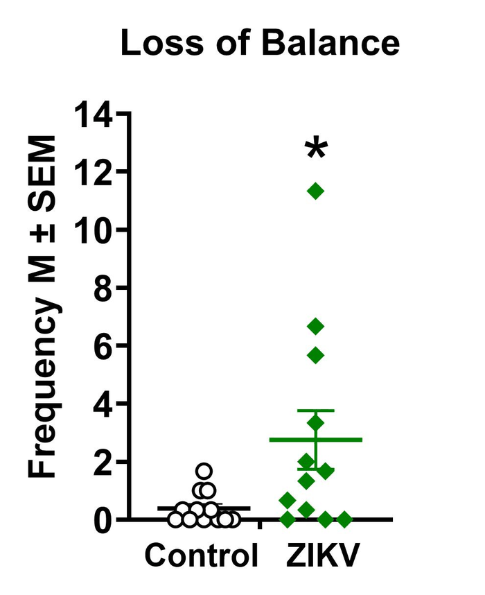
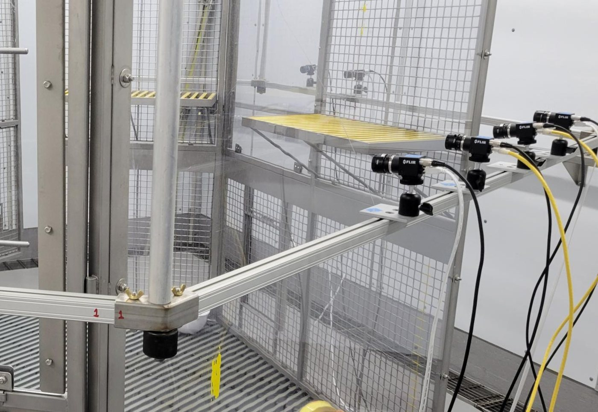
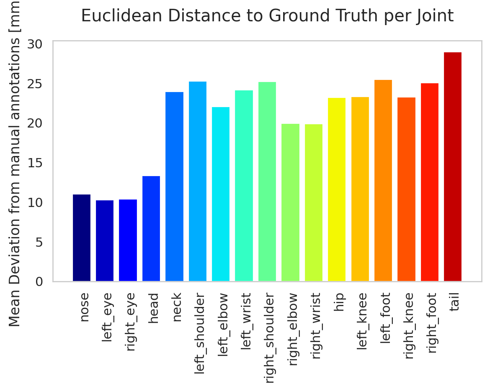
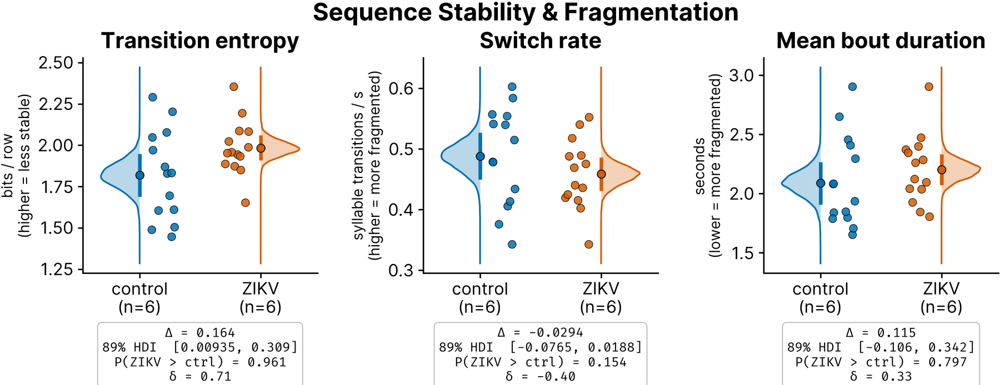

A slip anyone can see
© Emory National Biomedical Research Center, Emory University. All rights reserved.
A young macaque leaps for a ledge, and one foot misses. Play the clip once and you see the slip immediately. Earlier in our lab, colleagues spent hours scanning video and tallying moments just like this one. Their count showed a clear gap: juveniles infected with Zika virus soon after birth lost their balance more often than healthy controls.

© Emory National Biomedical Research Center, Emory University. All rights reserved.
A visible fall, however, is a late alarm. Long before a motor problem causes a monkey to tumble off a ledge, subtler disruptions may already be changing how it strings movements together—a slight hesitation, or an unusual choice of what to do next. Human observers with a checklist can count dramatic slips, yet they cannot reliably score continuous shifts across thousands of ordinary seconds. I wanted a way to track full-body 3D motion directly, so we could detect hidden motor changes without deciding ahead of time which mistakes to count.
Visible falls are late alarms. Subtle shifts in how movements fit together can begin long before anyone spots a slip.
Motion capture without the suit
Hollywood motion capture solves 3D tracking by gluing reflective markers onto an actor's suit. That approach fails immediately with freely moving young macaques, who will not wear sensors while climbing and playing. To capture their motion cleanly without touching the animals, I designed a markerless camera rig around their large hexagonal play cage.
An aluminum t-rail frame wraps five of the cage's six sides and carries 12 machine-vision cameras (FLIR Blackfly S). A hardware trigger fires all 12 shutters at the exact same instant, up to 60 times a second, streaming uncompressed video over a 120 Gbps network to a custom workstation with high-speed solid-state storage.


© Emory National Biomedical Research Center, Emory University. All rights reserved.
Two practical hazards shaped every piece of that hardware design: motion blur across cameras and blocked views. Reconstructing a fast-moving wrist in 3D requires seeing it from several angles at the exact same millisecond; if the cameras drift out of sync, the wrist appears in two places at once and triangulation breaks. Climbing macaques also constantly hide limbs behind their bodies and the cage mesh, so 12 surrounding views give us redundancy whenever several angles go blind. We built the entire capture and storage setup for under $50,000, betting that sharp multi-view video would give a deep neural network everything it needed.
Teaching a network to follow an acrobat
Turning synchronized video into a moving 3D skeleton requires teaching a neural network where every joint sits across every awkward posture a young primate can invent. I defined 17 keypoints across the body—nose, eyes, head, neck, shoulders, elbows, wrists, hip, knees, feet, and tail—and wrote the labeling protocol for an outside annotation team.
Choosing which frames to label mattered just as much as labeling a large volume. Picking frames at random from hours of playroom footage mostly feeds a model thousands of near-identical pictures of a monkey sitting still. Instead, I ran a diversity-sampling algorithm that pulls frames spanning distinct poses, camera angles, and individuals, ensuring the training set covers rare mid-air twists and climbs. Together with the annotation team, we have hand-labeled more than 65,000 frames so far. The results on this page come from a model trained on roughly 30,000 of those frames, while a final model trained on the full set is up next.

© Emory National Biomedical Research Center, Emory University. All rights reserved.
To reconstruct 3D poses directly from the synchronized video, I trained JARVIS-HybridNet, a 3D convolutional neural network in PyTorch. The network locates each keypoint across the camera views and combines that multi-view evidence into a single 3D coordinate in space. Each training run takes roughly four days on Emory's HyPER C3 GPU cluster, and I have now run inference across about one million frames.
Within the width of a dime
Measured against human annotators, the network's 3D estimates land within an average of 13.75 millimeters—less than the width of a dime. Every one of the 17 keypoints averages under 30 millimeters of error. Facial keypoints are easiest to pin down (roughly 10 mm for the nose and eyes), while the tail is hardest (about 29 mm) because it whips quickly and frequently tucks behind the body or mesh.


© Emory National Biomedical Research Center, Emory University. All rights reserved.
That 13.75-millimeter average hides a thin statistical tail of messy frames. Most predictions land within a few millimeters of the human mark, yet a small share jump as far as 400 millimeters during fast motion blur or brief occlusion. Smoothing trajectories over time repairs many of those sudden spikes, and retraining on all 65,000+ labeled frames should pull that outlier tail in further.
Reading movement like a language
Once the pose network worked, I ran straight into a second puzzle: a million frames of 17 floating 3D dots still do not tell you what a monkey is doing. If I sat down to write hand-crafted rules for “climbing” or “reaching,” I would be right back inside the human-checklist bottleneck—measuring only the behaviors I already thought to look for.
Spoken language offers a way out. Infinite sentences are built from a compact set of reusable syllables arranged by a grammar, and continuous animal movement follows a remarkably similar structure. I applied Keypoint-MoSeq, an unsupervised sequence model built on an autoregressive hidden Markov model, to read the stream of 3D keypoints with no behavioral labels at all. On its own, the model discovers short, recurring movement “syllables”—each lasting a little over a second—and estimates the transition rules governing how one syllable flows into the next.

© Emory National Biomedical Research Center, Emory University. All rights reserved.
Borrowing a tool from mouse neuroscience brought an immediate snag: a rhesus macaque moves nothing like a mouse. Mice dart in rapid fractions of a second, whereas a juvenile monkey's climbs and leaps unfold over longer arcs. Because Keypoint-MoSeq's core hyperparameter controls how long each syllable lasts, running it with mouse defaults chops primate actions into noisy fragments. To set the timescale from the animals themselves, I measured how quickly macaque 3D poses change over time (their temporal autocorrelation) and retuned the model accordingly. Across roughly one million frames, the adapted model settled on 15 stable syllables.
What was hiding in the sequence
With those 15 syllables in hand, I compared 6 Zika-infected macaques against 6 controls across 28 recording sessions. Unlike our lab's earlier manual balance tally that reported a p-value, I analyzed the syllable metrics using Bayesian models that return full uncertainty ranges. I report 89% credible intervals rather than the conventional 95%, following Richard McElreath's Statistical Rethinking—a deliberate reminder that any numerical cutoff is arbitrary rather than a magic boundary.
Two distinct differences surfaced between the groups. First, Zika-infected macaques used 4 of the 15 syllables at credibly different rates than controls. Second—and more surprising—their movement grammar was less predictable. Using transition entropy, an information-theory metric in bits that captures how uncertain the next syllable is once you know the current one, Zika-infected animals scored 0.16 bits higher than controls (89% credible interval: 0.01 to 0.31; 96% posterior probability that the increase is real). Knowing what a Zika-infected macaque is doing right now gives you less grip on what it will do next.

© Emory National Biomedical Research Center, Emory University. All rights reserved.
What stayed unchanged makes that shift even more intriguing. Zika-infected macaques did not jump restlessly between actions: they switched syllables at the same rate as controls, and each syllable bout lasted just as long. Both groups commit to individual movements in the exact same way. Watch any single second of video and an infected monkey looks completely ordinary; the difference only appears when you track how one ordinary movement chains into the next.
Watch any single second of video and a Zika-infected monkey looks ordinary. The difference only surfaces in how one movement chains into the next.


© Emory National Biomedical Research Center, Emory University. All rights reserved.
What remains uncertain
Six animals per group is a small cohort, so these early findings come with real caveats. Several Bayesian intervals remain wide, and a separate measure—overall drift in transition patterns away from the control average—points in the same direction with 90% posterior probability, which I treat as suggestive rather than settled. Our current models also treat the 28 recording sessions as independent even though multiple sessions come from the same 12 animals, the 15 syllables do not yet have validated names like “climbing” or “walking,” and Keypoint-MoSeq is still new to primate kinematics.
Those open questions set the immediate roadmap. Next, I am retraining the 3D pose network on all 65,000+ labeled frames, expanding the behavioral analysis to all 24 animals with animal-level hierarchical models, adding direct measurements of gait and balance, and assigning clear behavioral names to each syllable. Best of all, nothing in this pipeline depends on Zika virus: our team is already pointing the same 12-camera system at a macaque model of Parkinson's disease, looking for the earliest subtle motor changes before obvious symptoms ever appear.
Recognition. Selected for a press conference at the Society for Neuroscience's 2026 meeting, one of 30–40 abstracts chosen from 8,000–10,000 submitted. Best Poster Award, EPC Research Day Symposium, Emory (2024). Supported in part by a $50,000 pilot grant on which I am Co-PI.
With Rebecca Richardson, Alex van Schoor, Kaitlyn Love, Praneet Bala, Gordon Ramsay, Mehul Suthar, Ann Chahroudi, and Jessica Raper (principal investigator), at the Emory National Biomedical Research Center. Funded by a Pediatric Research pilot grant through the Marcus Autism Center, the National Institute of Neurological Disorders and Stroke (R01 NS120182), and the center's base grant (P51 OD011132).
Earlier work on balance in this model: Raper et al. (2020), Nature Communications 11:2534.